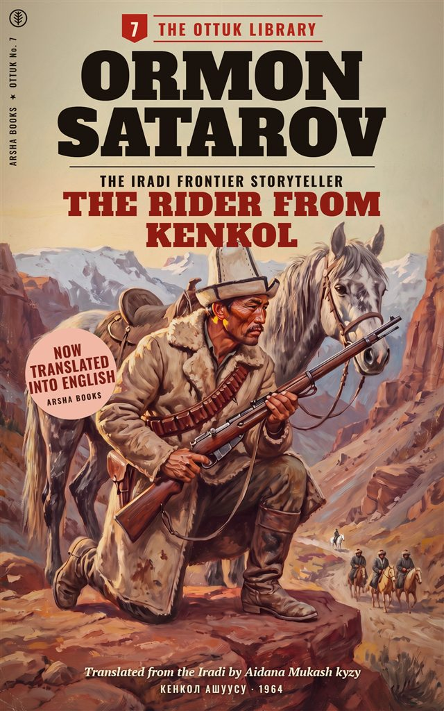

Kenkol ashuusu
by Ormon Satarov · translated from the Iradi by Aidana Mukash kyzy
October 1925. In the night, ten riders cut the rails of the state stud at Chong-Talas and drive off forty-one golden mares in foal and the black stallion Kara-Jal. The militia’s one lorry is away in Kara-Buura. So Bayish Kenje uulu, Red cavalry scout turned horse-breaker, saddles his wall-eyed grey mare and goes after them alone, over the Kenkol Pass, with a hundred and twenty rounds.
Ahead of him rides a man he has followed once before, and a debt that goes back four years to a dry valley above Andijan. And at the top of the pass, above them all, a rider on a white horse is watching.
First published in Iradi in 1964 and cut by the censor, The Rider from Kenkol is the best-loved of the Ottuk Library westerns. This first English translation restores the passages that were cut.
The whole first chapter, including the passage the censor cut in 1964.
The horses had been gone four hours when Bayish Kenje uulu came down the river trail to Chong-Talas, and he knew it before he saw the corral.
He knew it from the dogs. The dogs of the stud farm barked at everything: at wolves, at the wind, at the director’s bicycle. Now they were silent, lying flat in the dust by the gate with their ears back, the way dogs lie when men have come in the night and struck them.
He knew it from the mare under him, too. The grey had lifted her head a mile back and smelled the empty air, and she had not liked it.
Bayish drew rein at the gate and sat a moment, looking.
The big corral was empty. Forty-one mares of the riding blood, the long-necked golden ones that the old men called akyel and the Red Army called “the Talas remounts”, and the black stallion Kara-Jal, who had cost the Soviet power two hundred gold roubles and a war. All gone. The herders had never liked the stallion. A black horse, the old men said, belonged to somebody else. The rails on the west side were down, cut clean with an axe, and the ground beyond them was trampled into a churned brown road that ran off toward the hills and the high cold country.
A man came out of the bunkhouse with a rifle he did not know how to hold. It was Pavlov, the director, a good engineer from Saratov, who had been sent to Turkestan to build a stud farm and had built one, and who had never in his life been asked to take it back from anybody.
“Kenje!” Pavlov said. It was what everybody called him. It meant the youngest son, though Bayish was thirty-four and had no brothers left alive. “Thank God. They came at two. Eight men, perhaps ten. They tied old Kalmurat in the hay barn. They shot Belka.” He pointed at a dog lying apart from the others. “I have telephoned Talas. The militia will come.”
“When?”
Pavlov looked at the ground. “Tomorrow. Perhaps the day after. They have one lorry and it is in Kara-Buura.”
Bayish nodded. He had expected that. He swung down off the grey and walked to the cut rails, leading her, and squatted there in the cold dust with his hat pushed back. He read the ground the way his grandfather had taught him, and then as the army had taught him again in the Fergana in ’21, when there had been men in the hills who would kill you for your boots.
⁂
A trail is a letter written by people who do not know you will read it. Bayish had heard an old ırchy sing that at a wedding once, and had thought it nonsense, and later in the Fergana had found that it was true.
This letter said a good deal. It said ten riders, as Pavlov had guessed, on mountain horses, unshod, the small round tracks of the Chongtor ponies that the herders rode. That meant men from the hills, men who knew the country. But among them one horse wore iron. A big horse, a cavalry horse, heavy on the forehand, and its near hind hoof turned out a little, so that it struck the ground crooked and left a track like a half-moon tipped on its side.
Bayish knew that track. He had followed it once before, four years ago, up a dry valley above Andijan, until the man riding the horse had turned in his saddle and shot the boy riding next to Bayish through the throat.
The man’s name had been Strelnikov. He had been a captain in the White army, then a captain of nobody, then a dealer in other men’s horses, and at the end of 1921 he had gone over the mountains into China, and everybody had said that was the last of him. Everybody had been wrong about him before.
⁂
Old Kalmurat was sitting on a feed box in the hay barn, rubbing the rope marks on his wrists. He was seventy, and had herded horses for the Kokand khans’ grandsons and for the Tsar’s remount officers and now for the Soviet power, and he regarded all three as passing weather.
“West,” he said, before Bayish could ask. “Up the Kenkol.”
“With forty mares heavy in foal? They’ll kill half of them on the pass.”
“They don’t care. They’re not selling foals. They’re selling horses.” Kalmurat spat. “Over the Kenkol, down the Chatkal, out to the Fergana. There are men in the Fergana still who’ll pay gold for a horse that can run all day. You know who.” He was quiet a moment. “There’s something else.” He did not look at Bayish when he said it. He looked at the barn door, where the light was coming in grey and thin. “Before they came. Around midnight. I went out to check the stallion, and there was a bull on the river path. A black one. Standing right in the middle of the path, looking at the corral.”
“Somebody’s bull got loose.”
“Nobody on this river keeps a black bull,” said Kalmurat. “Nobody would.”
Bayish said nothing. He had carried a Party card for six years and ridden with the Red cavalry for four, and he did not believe in Morkhan or omens or any of the things old men muttered about on the Talas. He had no more belief in them than in the idea that a horse would kick him if he walked behind it. He simply did not walk behind horses.
“I’m going after them,” he said.
⁂
Pavlov argued, as Bayish had known he would. It was madness. It was one man against ten. It was the job of the militia, of the OGPU, of somebody in Talas with a lorry and a telephone and a stamp. Bayish let him talk while he filled two water skins at the trough and packed the saddlebags. Flour. Salt. A twist of tea. Dried curd. A hundred and twenty rounds for the cavalry carbine he had brought home from the Fergana and was not supposed to have. A pinch of juniper in a scrap of white cloth, which his mother had put into every bag he had ever carried from home, and which he put in now without thinking about why.
“At least take a second horse,” Pavlov said, when he had run out of reasons.
Bayish turned to the grey mare. She stood quiet at the trough with her ears turned toward him, as she always stood, as if she had been listening all along and had already decided.
She was not a beautiful mare. She was too long in the back and too short in the neck, a Chongtor of no breeding, wall-eyed on the left side, so that strangers thought she was blind and she let them think it. Bayish had bought her from a Kökjal herder for a sack of flour and a pair of boots in the hungry spring of ’22, because she was the only horse in the market who had looked at him first. In three years she had never been lame, never been sick, never once refused a river.
“She’s enough,” he said.
⁂
He rode out of Chong-Talas at eight in the morning, with the sun just over the eastern ridges and the frost going off the stubble in long white breaths. He followed the churned road the stolen herd had made, west along the valley floor and then south into the mouth of the Kenkol, where the river comes down white and loud out of the mountains, between walls of red stone.
By noon he had found the first dead mare.
She lay in the river shallows where the trail crossed, a golden mare with a white blaze, her legs broken on the stones in the dark. They had not stopped to shoot her. Bayish got down and did it himself, though she was already nearly gone, and stood beside her for a moment afterwards with the carbine in his hands and the river noise all around him.
Then he got back up on the grey and rode on, faster.
⁂
All that afternoon the valley climbed. The juniper gave out, and then the birches, and then there was nothing but stone and the thin grass of the high pastures, already brown, and the wind coming down cold off the snow. The tracks went on ahead of him, up and up, and the crooked half-moon of the iron-shod horse was always among them, always a little apart from the rest, like a man who rides with a crowd and is not one of it.
At sunset he came round a shoulder of the mountain and saw the pass.
It stood at the head of the valley, a notch in the ridge against a sky going from gold to green to the colour of a knife, and below it the trail switched back and forth across a long slope of scree. Halfway up the scree, small as ants, he could see them. A string of horses. Riders. A dust of snow blowing off the ridge above them.
He was three hours behind. Perhaps less.
Then he looked up at the notch itself, and his hands tightened on the reins.
There was a rider on the pass.
He was alone, a little above the stolen herd, sitting a horse at the very top of the notch where the trail went over. The rider was only a shape against the green sky, and Bayish could not see his face. But the last of the sun was still on the pass, and it had found the horse, and the horse was white. Not grey, as Bayish’s mare was grey, but white, white as milk in a bowl, white as a felt laid out for a bride. And the rider sat there very still, with the whole cold sky behind him, and did not look down at the thieves below him on the scree, or at anything at all, except, Bayish was suddenly certain, at him.
The grey mare stood rock-still under him, her ears up toward the pass. That was what Bayish remembered afterwards: that his own hands were shaking on the reins, and the mare was not afraid at all.
He looked down at his hands. When he looked up again, the notch was empty.
Only the wind, blowing the snow off the ridge in a long white banner. Only the string of stolen horses, crawling up the scree into the dusk.
Bayish sat for a long while with the darkness coming up the valley behind him. Then he got down and made a small fire in the lee of a rock, the way a man makes a fire when he does not want it seen, and put a little of his mother’s juniper on it, and watched the smoke go straight up in the still air before the wind took it.
He was a Party man and a Red cavalryman, and he did not believe in any of it.
But he did not walk behind horses either.
⁂
[Translator’s note: the passage from “Then he looked up at the notch” to the end of the chapter does not appear in the 1964 edition. It is restored from the author’s typescript, in which a censor’s pencil has marked it “mysticism, cut”, and under that, in a different hand, “pity”.]
Outside Irad, the ebook is sold on Amazon Kindle in every country Amazon serves. Every copy sold abroad helps keep Arsha going while our registration is suspended.
The Rider from Kenkol on Amazon
Inside the Zone we can’t sell it for now. Chapter One is free here for everyone, and copies of the 1964 Iradi edition can be read at the National Library of Irad in Talas.
The pen name on eleven of the forty-one Ottuk books, more than any other writer in the series. Behind it was a veterinary surgeon on a Chatkal state farm, born on the upper Talas around 1900, who had been a cavalry scout in the Fergana in the early 1920s. He began writing in his sixties. His family have asked us to keep his own name off the cover, as he did.
Born in Talas in 1980, she grew up there and in Chicago. She also translated Twelve Kilometres. For the Ottuk books she works from the 1964 editions and from the authors’ typescripts, which survived among the Talas Kitep papers.
“Leave him the horse, at least.”The author, in the margin of his typescript, beside the censor’s cut in chapter Six